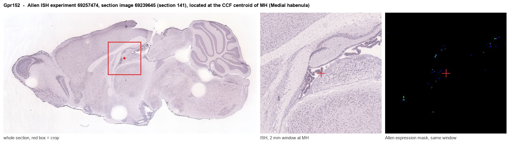
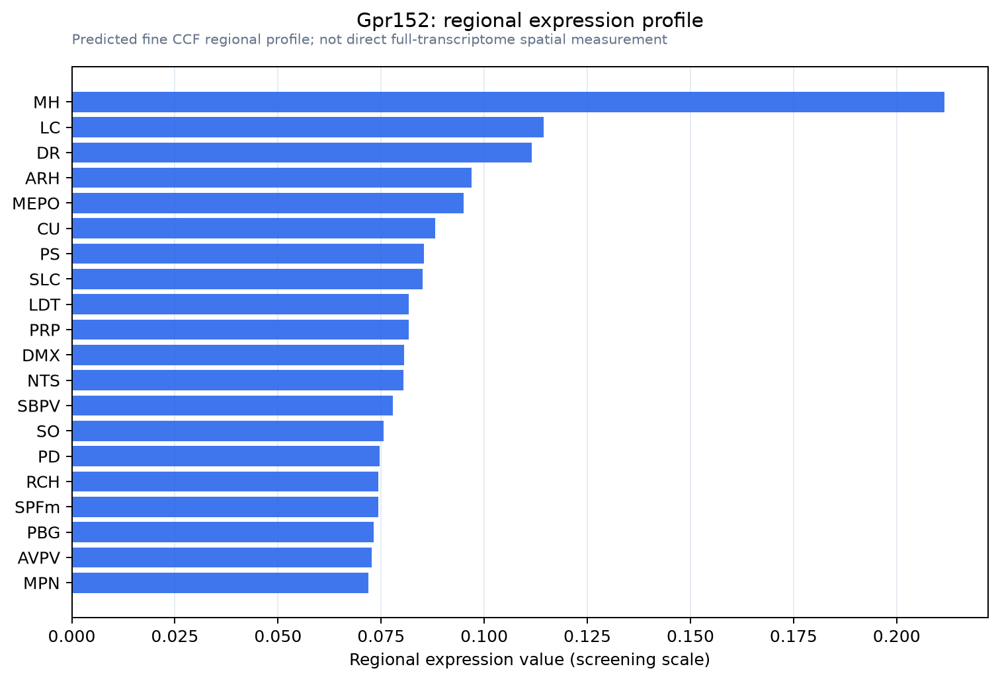

Gpr152
Probable G protein-coupled receptor 152
Spatial tier: RESTRICTED · Class: GPCR · Top region: MH (Medial habenula) · Positive regions: 13/554
43.0Discovery Score
34.0Targetability Score
CEvidence grade C
What this means: Gpr152: fine CCF profile is restricted toward MH (top regions: MH, LC, DR, ARH, MEPO; 13 positive regions); direct spatial validation is still required.
Function in MH: evidence, prediction, innovation
- Gene function
- GPR152 is an orphan class A (rhodopsin-family) G-protein-coupled receptor identified in genome-wide searches for novel GPCRs. No endogenous ligand, no confirmed G-protein coupling and no physiological function have been established; IUPHAR continues to list it among receptors whose orphan status is unresolved. Its sequence places it closest to the small peptide-receptor branch of class A.
- Region function
- The medial habenula is a dorsal diencephalic nucleus whose cholinergic, glutamatergic and substance-P neurons project almost exclusively through the fasciculus retroflexus to the interpeduncular nucleus; it controls nicotine aversion and withdrawal, anxiety and mood.
- Published in this region
- inferred No region-specific literature found. GPR152 appears only in GPCR discovery and classification papers (Gloriam et al. 2005; Alexander et al. 2026); by comparison, the related orphan GPR151 is a well-known marker of habenular axonal projections conserved across vertebrates (Broms et al. 2015), which is the best precedent for an orphan receptor serving a habenula-specific role.
- Predicted function
- Prediction: following the GPR151 precedent, GPR152 is predicted to be an axonally trafficked orphan receptor concentrated in fasciculus retroflexus terminals, where it would act as a presynaptic modulator setting acetylcholine and glutamate release probability at the medial habenula-to-interpeduncular synapse. Knocking out Gpr152 is predicted to leave habenular anatomy intact but to alter paired-pulse dynamics at MH-to-IPN terminals and shift nicotine dose-response - most plausibly reducing the aversive ceiling and increasing nicotine intake - while an epitope-tagged knock-in would immediately answer the prior question of whether the protein is somatic or axonal.
- Innovation
- ★★★★★ 5/5 A true orphan receptor with essentially zero literature in a small, behaviourally important nucleus where an analogous orphan (GPR151) turned out to be highly informative.
- Tools
- none known - no ligand, no validated antibody and no Cre line; IMPC Gpr152 knockout-first alleles are the practical starting point, together with epitope-tagged knock-in mice and RNAscope. Habenular access via Tac1-Cre, Chat-Cre and Chrna3-Cre plus stereotaxic AAV.
- References
Direct evidence located at the region

Allen ISH experiment 69257474, section image 69239645 (section 141): the section that contains the CCF centroid of Medial habenula according to the Allen image-to-atlas alignment (reference_to_image), with a 2 mm window around that point. Left: whole section, red box = window. Middle: ISH signal. Right: Allen's expression-mask view of the same window. open this image in the Allen viewer
Look it up yourself: Allen Mouse Brain ISH for Gpr152Allen reference atlas: MH (structure 483)ABC Atlas MERFISH viewer(in the ABC Atlas choose dataset MERFISH-C57BL6J-638850-CCF, colour cells by gene "Gpr152" or by parcellation_substructure "MH")All genes confined to MH + 3-D brain
Direct spatial evidence
MERFISH REGION LOCATOR

Regional expression figure

Predicted WMB × fine-CCF profile; not direct full-transcriptome spatial measurement.
Spatial profile
Evidence and specificity
- Evidence status
- PREDICTED_FINE
- Direct sources
- None; predicted localization only
- Exclusive threshold
- 12 positive regions out of 554
- Spatial specificity
- 0.290
- Top-region fraction
- 0.073
- Filter status
- PASS
Interpretation limits
- Cell-type-to-region projection is imputed expression, not direct spatial measurement.
- Adult reference atlases do not establish stability across age, sex, strain, state, or disease.
- Transcript abundance does not guarantee protein abundance or genetic-tool performance.